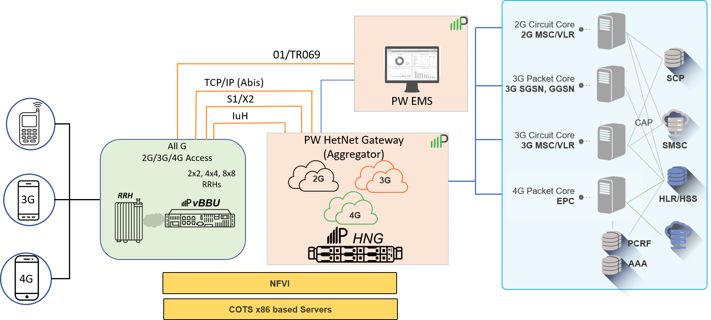

Overview
The Parallel Wireles Element Management System (PW EMS) is a suite of Web-based applications used for management and monitoring of all Parallel Wireless network elements that can be deployed in a virtualized or cloud-native environment.
The PW EMS provides the following functionality:
- Devices can be configured and managed, which includes the logical grouping of multiple cells and optionally applying a defined configuration to multiple cells. Also, changes to multiple cells can be triggered, based on configuration updates.
- Full support for fault management, configuration management, accounting, performance, and security (FCAPS).
- Enables configuration of the Virtual Baseband Unit (vBBU) and provides network monitoring and fault management for both the vBBU and HetNet Gateway (HNG).
- Integrated support for existing Northbound Operations Support Systems (OSS) functions for alarms (through SNMP), statistics (REST API), inventory information, device health status, and counter management for all managed devices.
- Supports Self-Organizing Network (SON) system functions for Automatic Neighbor Relation (ANR) management of cells based on the X2 gateway service (HNG) and user equipment (UE) measurement reports.
- Access control is provided to support the following administrative abilities:
- Use Role-Based Access Control (RBAC) to create multiple groups of users and organizations with designated security permissions to allow granular access control for each role or user group.
- LDAP integration for centralizing user authentication and authorization.
- Audit logging to track each RBAC operation that is performed on the system.
- Operators can do performance management through PW EMS Network Monitoring. Flexible dashboards can be configured, customized and used to monitor Key Performance Indicators (KPIs) that provide an in-depth analysis of the network. Configured thresholds in this application can be used to alert operators to performance changes on their network.
- Upgrade devices and track the status of these upgrades in real time.
The service provider network elements shown below are managed and controlled by the PW EMS. Some of the elements shown below are described in greater detail in the following sections:
